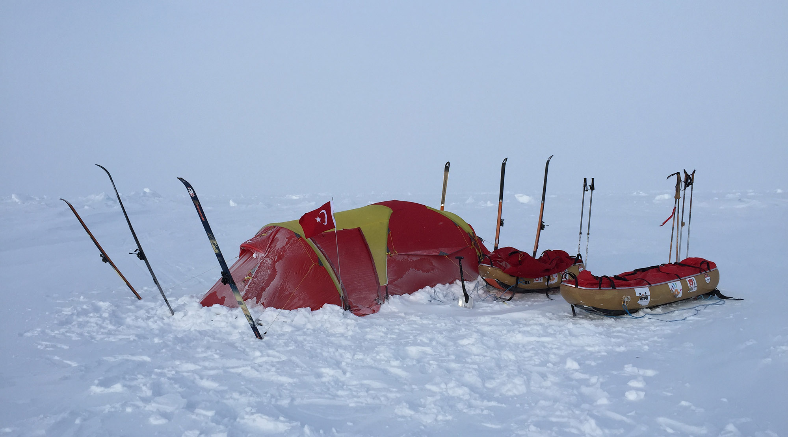
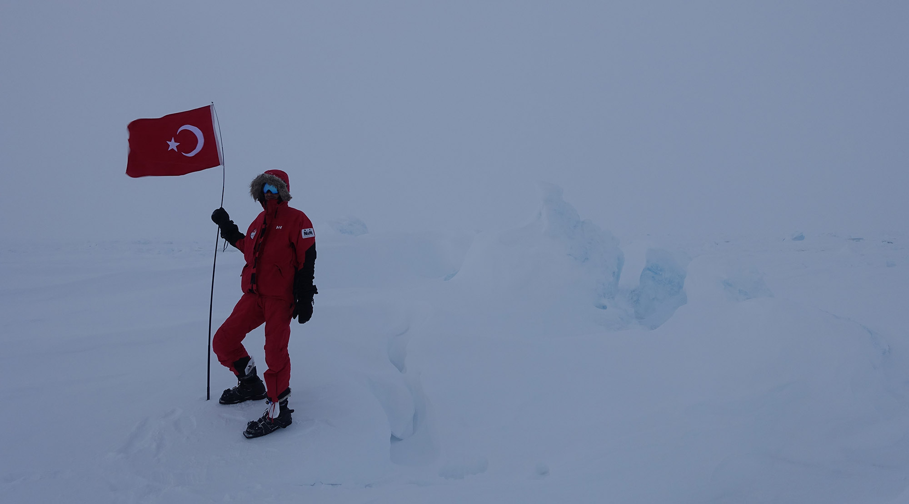
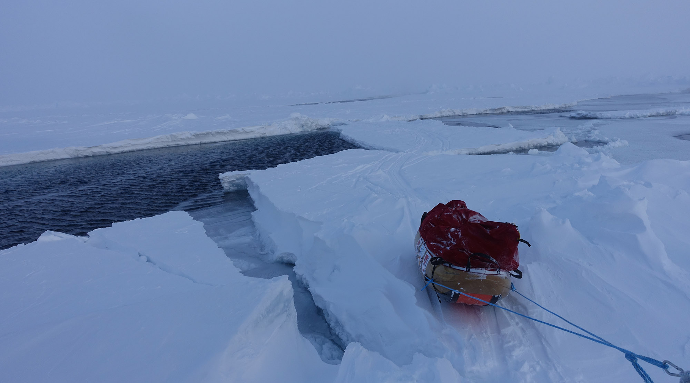
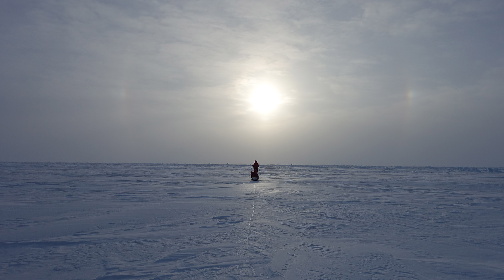
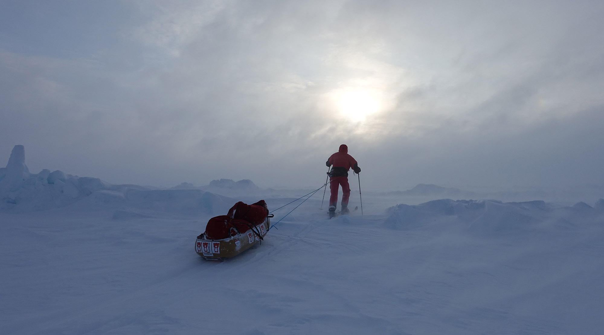
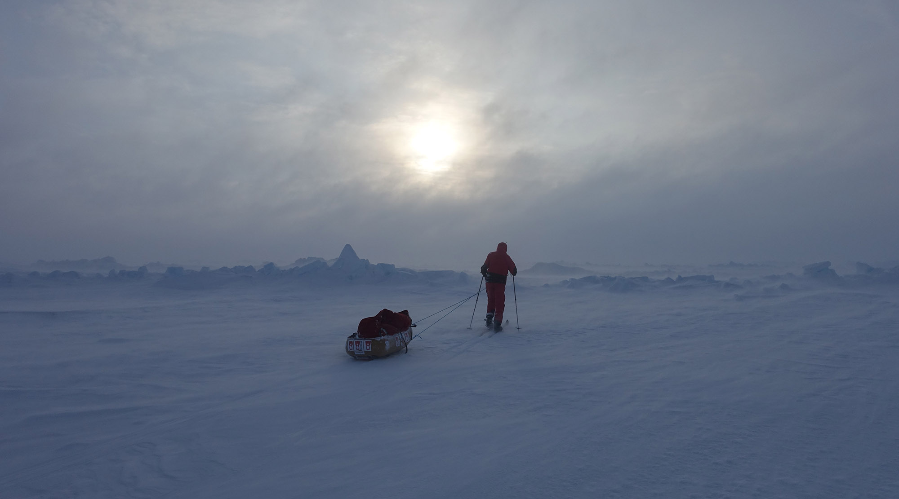
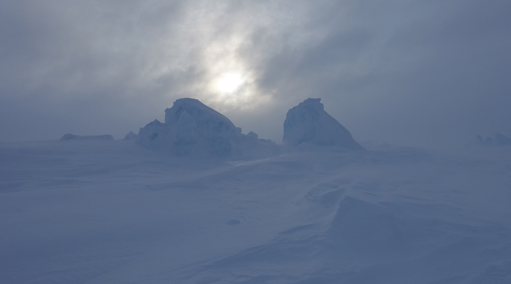
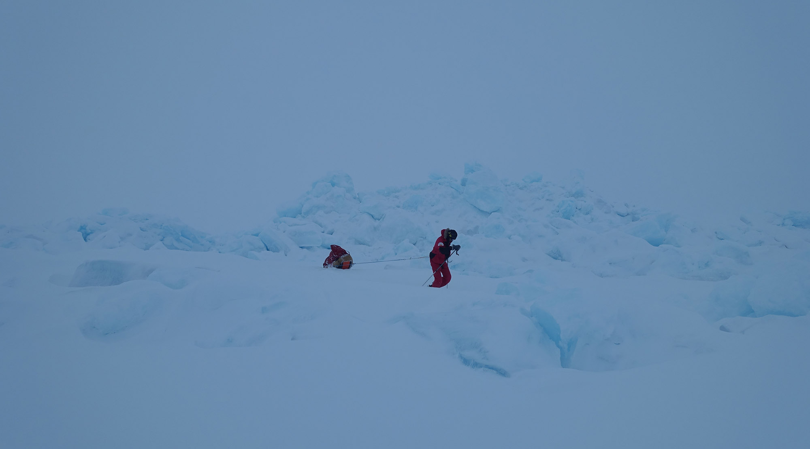
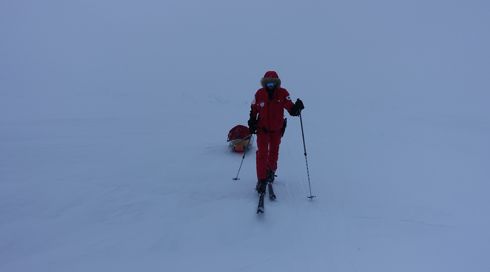
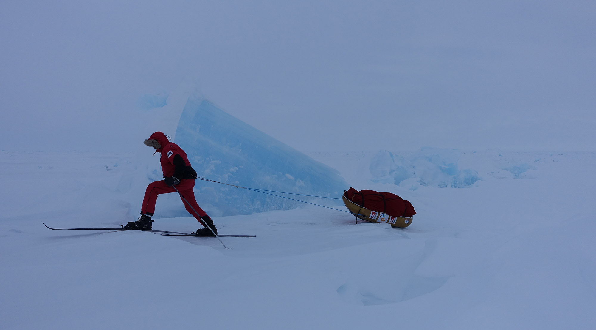
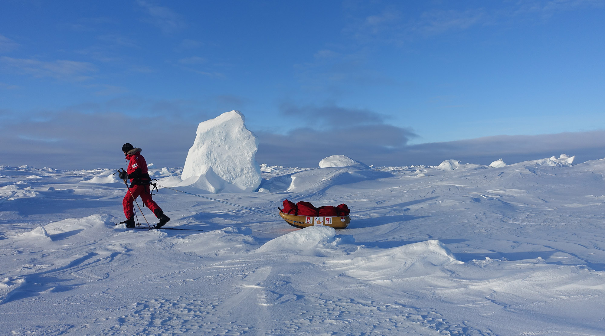
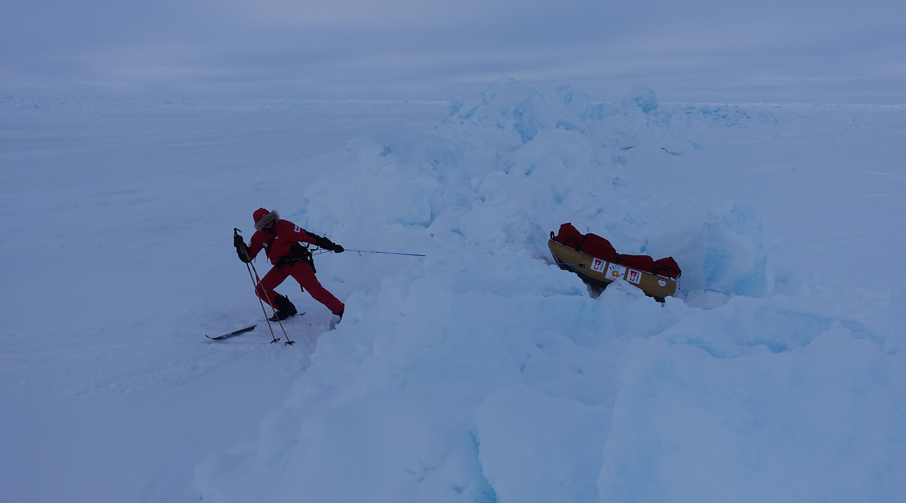
Son Enlem seferi kuzey buz denizinde, 89° kuzey den 90° kuzeye
yapılan bir seyahattir. Yaklaşık 110 kilometrelik bu mesafe kayaklar üzerinde,
ve bu sure zarfında ihtiyaç duyulan tüm malzemelerin arkamızdaki kızaklarda
çekilerek katedildiği bir yolculuktur.
Hedefimiz Barneo buz ussünden yola çıktıktan on gün sonra kuzey kutbuna
ulaşmış olmaktır.
Takımımız iki kişiden oluşmaktadır. Deneyimli bir kutup kaşifi olan Norveçli
Inge Solheim ve Türkiyeden kuzey buz denizinde ilk deneyimini yaşayan Burak Öymen.
CLOSE